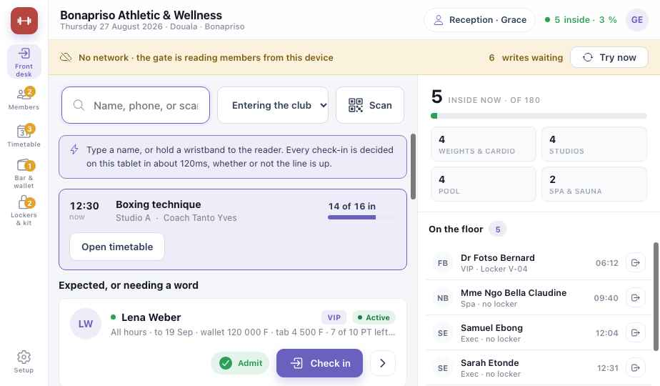
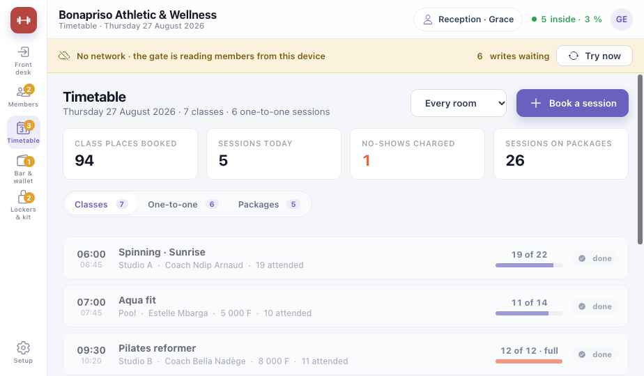

Guide de module
Salle de sport & bien-être
Faites entrer les membres en un clin d'œil — avec ou sans internet — et gérez abonnements, cours, coaching, bar à jus et paie des coachs. Les chapitres communs sont dans les chapitres Plateforme.
Les captures montrent la version anglaise du prototype. Les boutons sont donnés en français, avec le libellé anglais entre parenthèses quand c'est utile.
Salle de sport · Partie 1
Est-ce pour moi ?
Salle de sport et club
Musculation, cardio, cours ; membres au mois ou à l'année.
Studio
Cours et séances individuelles, à l'unité ou en carnet.
Piscine, spa, bien-être en entreprise
Zones selon la formule, comptes entreprise facturés au mois.
Ce que vous avez à chaque niveau
LiteOuvrir la porte
- Accueil : faire entrer un membre
- Registre des membres et formules
- Fréquentation en direct par zone
- Planning des cours
MidLa boucle du club
- Portique et accès par zone
- Coaching et carnets de séances
- Porte-monnaie membre · bar à jus et boutique
- Gel, transfert, sièges entreprise
- Casiers · suivi des machines · rappels WhatsApp
FullArgent et fidélité
- Achats sur compte, réglés au mois
- Commissions des coachs et export de paie
- Fidélisation et départs
Entrée en un clin d'œil
06:00 au Bonapriso Athletic & Wellness, le rush du matin. Chaque entrée est décidée sur la tablette de l'accueil — et continue quand internet tombe.
- Lena présente son bracelet au lecteur de l'accueil.
- La tablette vérifie elle-même sa formule — sans attendre un serveur. Entrée.
- Sa formule ouvre toutes les zones. La fréquentation passe à 6.
- Internet tombe. Rien ne change à la porte.
- Eric passe. Son abonnement a expiré hier — l'accueil voit pourquoi tout de suite.
- Il renouvelle par MoMo à l'accueil. Le paiement attend le réseau ; il entre.
- Le réseau revient. Tout ce qui attendait part tout seul.
Salle de sport · Partie 2
Installation Lite
- Premiers pasCompte, établissement et personnel — P1. Les coachs ne voient que leurs séances et leur paie.
- Zones et capacitéMusculation et cardio, studios, piscine, spa — chacun avec sa limite.
- FormulesNom, prix, mois ou année, zones, horaires — VIP All-Access 180 000 F ; Matin 55 000 F, 05:30–11:00.
- Importez les membresDepuis un tableur : nom, téléphone, formule, date de fin. Chacun reçoit un QR code ou un bracelet.
- CoursLe planning de la semaine : cours, salle, coach, places.
- PaiementsEspèces, MTN MoMo, Orange Money ; le porte-monnaie membre si vous l'utilisez. Mid
Salle de sport · Partie 3
Une journée au club
| Moment | Ce que vous faites | Écran | Niveau |
|---|---|---|---|
| 05:30 · Rush d'ouverture | Scannez, faites entrer. Les abonnements expirés disent pourquoi. | Accueil | Lite |
| Un renouvellement | Renouvelez la formule ; prenez MoMo ou espèces. | Accueil · Membres | Lite |
| L'heure du cours | Places réservées ; les membres pointent au cours. | Planning | Lite |
| Coaching | Réservez une séance ; elle sort du carnet du membre. Les absences peuvent être facturées. | Planning | Mid |
| Bar à jus | Scannez le membre et vendez sur son porte-monnaie. | Bar et porte-monnaie | Mid |
| Pic du soir | Surveillez la fréquentation par zone. | Accueil | Lite |
| Fin de mois | Factures entreprises, commissions des coachs, export de paie. | Coachs | Full |
Salle de sport · Partie 4
Les écrans
La barre de gauche : Accueil (Front desk), Membres, Planning (Timetable), Bar et porte-monnaie, Casiers, Coachs, et Configuration en bas.
Accueil Lite

12345678910- Pas de réseau — l'accueil continue depuis cette tablette.
- Écritures en attente — envoyées seules au retour du réseau.
- Recherche par nom ou téléphone, ou bracelet au lecteur.
- Scanner le QR code d'un membre avec la caméra.
- Cours en cours — places prises ; ouvrir le planning.
- Attendus, ou à qui parler — formule, date de fin, porte-monnaie et compte.
- Entrée · Pointer (Admit · Check in).
- Présents par rapport à la limite du club.
- Par zone — muscu, studios, piscine, spa.
- Sur place — qui est là, depuis quand ; faire sortir.
Planning Lite

12345678- Salle — un studio ou toutes.
- Réserver une séance — une place de cours ou un individuel.
- Aujourd'hui — places de cours, séances, séances sur carnet.
- Absences facturées — selon votre règle. Mid
- Cours · Individuel · Carnets.
- Cours — heure, salle, coach, prix, présents.
- Places — réservées sur la limite de la salle.
- Complet — les nouvelles demandes vont en liste d'attente.
Salle de sport · Partie 5
En cas de problème
Continuez à scanner. La tablette décide chaque entrée elle-même ; les renouvellements MoMo attendent l'envoi, les espèces passent tout de suite.
Membres → son historique montre chaque paiement avec sa référence. Un MoMo en attente d'envoi s'affiche comme tel.
L'accueil voit 12 sur 12. Ajoutez un siège au compte entreprise, ou vendez une formule personnelle. Mid
Coachs → ses séances, chacune signée et datée, avec la part appliquée. Full
Faites entrer à l'accueil ; le portique se reconnecte seul.
Salle de sport · Partie 6
Aller plus loin
Portique et zones Mid
Portiques et bracelets ; chaque formule ouvre ses zones.
Gel et transfert Mid
Suspendre un abonnement en voyage, ou céder des mois payés.
Rappels WhatsApp Mid
Rappels de cours et de renouvellement là où le SMS ne passe pas.
Commissions des coachs Full
Une part de chaque séance signée, plus les primes de cours ; export de paie en fin de mois.
Fidélisation Full
Visites par membre, qui ne vient plus, heures de pointe.
À imprimer et afficher
Fiches du personnel
2. Expiré ? Renouveler → MoMo ou espèces.
3. Pas de réseau ? Continuez.
4. Surveillez la jauge de fréquentation.
2. Séance faite → signez-la.
3. Absent → marquez-le.
4. Machine en panne → signalez-la.
2. Ajoutez les articles.
3. Porte-monnaie, MoMo ou espèces.
4. Solde bas ? Proposez une recharge.
Guide utilisateur Koomzo · Salle de sport & bien-être · Version 2 · Les écrans montrés sont ceux du prototype Koomzo actuel. Les noms, formules et prix sont des exemples.